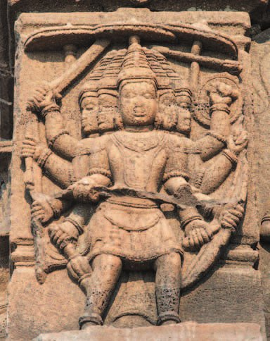
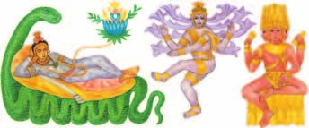
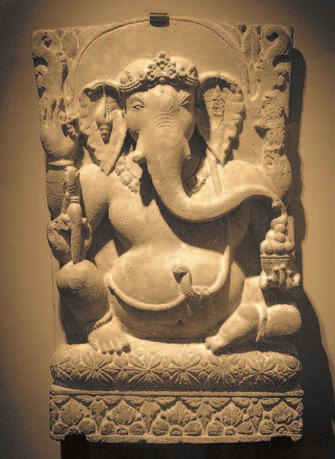
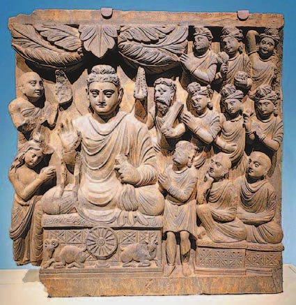
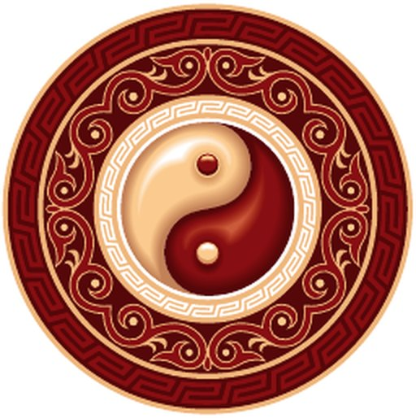
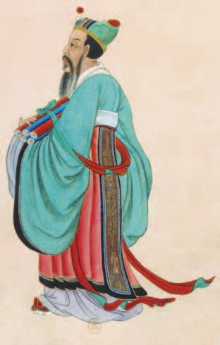
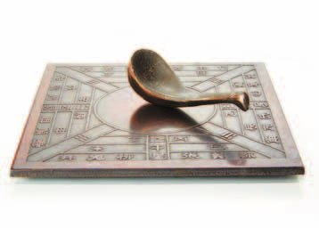

Религия Индии
Ранние религиозные верования жителей Древней Индии называются .
В брахманизме разработали учение о круговороте перерождений — . По нему каждый человек проживает на Земле много жизней, и душа после смерти всякий раз переходит в новое тело.
От чего зависит новая жизнь? От прошлой. Если человек совершал плохие поступки, лгал, убивал, ненавидел — он рождался вновь в самой низшей варне или даже становился животным и должен был исправлять свои ошибки. И наоборот: добродетель открывала путь к рождению в высшей варне.
Особо почитаемыми в Индии были боги , и . Брахма — бог-творец, создатель Вселенной; его изображали человеком с четырьмя руками и четырьмя лицами, направленными в разные стороны света. Вишну — хранитель мирового порядка. Шива — бог-разрушитель, его изображали в виде танцора.
Брахманизм не был единой религией. Но постепенно разные его толкования объединились в одно учение — . Второстепенных, но почитаемых богов в нём много. Таков — добродушный толстяк с головой слона, покровитель купцов, путешественников и учёных.
Индуизм подходил всем слоям общества: он оправдывал господство знати, а беднякам давал надежду на будущее.
А в VI (6) веке до н. э. в Индии возникла новая религия — . Ей суждено было стать одной из мировых религий.
Ранние религиозные верования жителей Древней Индии называются брахманизмом.
В брахманизме было разработано учение о круговороте перерождений — сансара. Согласно ему, каждый человек проживает на Земле большое количество жизней и душа после смерти всякий раз переходит в новое тело. Здоровье, благополучие и судьба людей зависят от того, как они провели предыдущую жизнь. Если человек совершал плохие поступки, лгал, убивал, ненавидел, то он рождался вновь в самой низшей варне (или даже становился животным) и должен был исправлять свои предыдущие ошибки. И наоборот, добродетель открывала путь к рождению в высшей варне.
Особо почитаемыми в Индии были боги Брахма, Вишну, Шива. Брахма — бог-творец, создатель Вселенной. Он изображался человеком с четырьмя руками и четырьмя лицами, направленными в разные стороны света. Вишну — хранитель мирового порядка. Шива — бог-разрушитель, он изображался в виде танцора.
Брахманизм не был единой религией. Но постепенно разные его толкования объединились в единое учение — индуизм. В индуизме много второстепенных, но почитаемых богов. Таков Ганеша — добродушный толстяк с головой слона. Считается, что он покровительствует купцам, путешественникам, учёным. Индуизм подходил всем слоям общества, всем сословиям, земледельцам и горожанам. Он оправдывал господство знати, а беднякам давал надежду на будущее.
В VI (6) веке до н. э. в Индии возникла новая религия — буддизм. Ей суждено было стать одной из мировых религий.


▲ Опиши, как изображали Ганешу.
Новая религия началась с сына индийского раджи — . Жизнь царевича проходила за стенами роскошного дворца, в удовольствиях и без забот. Он видел вокруг только радостные лица и думал, что все люди на свете так же счастливы, как и он.
А потом он вышел за стены. Однажды Гаутама встретил у дороги дряхлого старика. Потом увидел человека, страдающего от неизлечимой болезни. Затем наткнулся на похоронную процессию. Потрясение было так велико, что прежней счастливой жизни он продолжать не смог.
Царевич бежал из дворца и семь лет провёл в скитаниях. За эти годы он увидел, как тяжело жить простому человеку, сколько горестей переносит он на своём пути. А если кому-то удаётся избежать бедности — его ждут другие опасности: терзания ревности и зависти, козни врагов и неожиданные повороты судьбы. И всех держит в страхе смерть.
Гаутама беседовал с мудрецами, изучал древние книги, подолгу жил с отшельниками — но никто не смог ответить на мучивший его вопрос: как избежать страданий?
Ответ он нашёл сам. Избежать всего, что лишает человека покоя и счастья, решил он, можно, отказавшись от желаний, удалившись от мира и живя только своими мыслями. Это позволит после смерти достичь вечной — освобождения от желаний, страданий и привязанностей.
Сорок лет проповедовал Гаутама своё учение. Его прозвали , что значит «просветлённый». Ученики после смерти учителя продолжали его дело: вдали от городов, в горах и лесах, они строили и селились в них, уединяясь от земной суеты.
Рождение новой религии связано с сыном индийского раджи (царя) Сиддхартхой Гаутамой. Жизнь царевича проходила за стенами роскошного дворца, в удовольствиях и без забот. Он видел вокруг себя только радостные лица и думал, что все люди на свете так же счастливы, как и он. Оказавшись за пределами дворца, царевич понял, что жизнь полна страданий.
Однажды Гаутама встретил у дороги дряхлого старика. Потом увидел человека, страдающего от неизлечимой болезни. Затем наткнулся на похоронную процессию. Потрясение было столь велико, что Гаутама не смог продолжать прежнюю счастливую жизнь. Царевич бежал из дворца и семь лет провёл в скитаниях. За эти годы он увидел, как тяжело жить простому человеку, сколько горестей переносит он на жизненном пути. А если кому-то удаётся избежать бедности, его ждут другие опасности — терзания ревности и зависти, козни врагов и неожиданные повороты судьбы. И всех держит в страхе смерть.
Гаутама беседовал с мудрецами, изучал древние книги, подолгу жил с отшельниками, но никто не смог ответить на мучивший его вопрос: как избежать страданий? Гаутама ответ нашёл сам. Избежать всего, что лишает человека покоя и счастья, решил он, можно отказавшись от желаний, удалившись от мира и живя только своими мыслями. Это позволит после смерти достичь вечной нирваны — освобождения от желаний, страданий и привязанностей.
Сорок лет проповедовал Гаутама своё учение. Его прозвали Будда, что значит «просветлённый». Ученики после смерти учителя продолжали его дело. Вдали от городов, в горах и лесах, они строили монастыри и поселялись в них, уединяясь от земной суеты, обретая в размышлениях и одиночестве освобождение от страданий.

- Какая главная идея заключена в учении Будды?
- Опиши, как изображали Ганешу.
1. По сансаре человек рождается в высшей или низшей варне по делам прошлой жизни. Как это связано с порядком варн из §17?
2. Учебник говорит, что индуизм «подходил всем слоям общества». Как одна религия может устраивать и знать, и бедняков?
3. Гаутама жил во дворце и не знал забот. Почему именно ему открылось, что «жизнь полна страданий», а не бедняку, который страдал всю жизнь?
4. Будда искал ответ у мудрецов, в древних книгах, у отшельников — и не нашёл. Что это говорит о его учении?
Культура и наука Индии
С конца IV (4) века до н. э. буддизм широко распространился по Индии. В стране возводили много храмов и мест поклонения Будде.
Древнейшими литературными произведениями Индии были — на санскрите это слово значит «знание». Веды отражают религиозные представления ариев. Их четыре — четыре больших сборника текстов; в них и стихотворные части, и гимны, и толкование религиозного ритуала. А поэму иногда называют пятой Ведой.
Другая великая поэма Индии — .
Научные знания древних индийцев разошлись по всему миру. Они создали новую систему записи цифр. Их открытием был , обозначавший пустоту. А число определялось не только начертанием, но и местом: для записи десятков, сотен и тысяч можно было пользоваться одними и теми же значками.
Эти цифры заимствовали арабы, а от них они попали в Европу — мы называем их сейчас .
В Древней Индии появились и шахматы. Они назывались , что означает «войско, состоящее из четырёх частей», то есть из четырёх родов войск: пехоты, колесниц, кавалерии и слонов.
С конца IV (4) века до н. э. буддизм получил в Индии широкое распространение. В государстве возводили много храмов и мест поклонения Будде.
Древнейшими литературными произведениями Индии были Веды (от санскр. «знание»). Веды отражают религиозные представления ариев. Традиция насчитывает четыре Веды — больших сборников текстов (поэму «Махабхарата» иногда называют пятой Ведой). Сборники содержат и стихотворные части, и гимны, и толкование религиозного ритуала.
Широко распространились по миру научные знания древних индийцев. Они создали новую систему записи цифр. Открытием индийцев был ноль, обозначавший пустоту. А число определялось не только начертанием, но и местом: для записи десятков, сотен, тысяч можно было пользоваться одними и теми же значками. Эти цифры были заимствованы арабами и от них попали в Европу, мы называем их сейчас арабскими.
В Древней Индии появились шахматы. Они назывались «чатуранга», что означает «войско, состоящее из четырёх частей», то есть четырёх родов войск: пехоты, колесниц, кавалерии и слонов.
- Какие открытия древних индийцев используются и в наши дни?
5. Почему ноль — это открытие, а не просто ещё один значок?
6. Цифры придумали в Индии, а называются они арабскими. Как так вышло?
7. Шахматы назывались «войско из четырёх частей». Что это говорит о том, откуда взялась игра?
Религиозные верования Древнего Китая
Как и многие народы Древнего мира, китайцы обожествляли природу: землю, небо, воду.
По их представлениям, мир сначала был един, а потом отделились небо от земли, а день от ночи. Всё в мире разделилось на тёмное начало — — и противоположное ему светлое — . Небо китайцы стали считать воплощением ян, а землю — инь.
Верховным божеством был . А ещё китайцы поклонялись , считая их такими же законными жителями земли, как и человека. Абсолютно злых духов не было — как, впрочем, и абсолютно добрых, — но с ними надо было уметь общаться. Можно разозлить духа, и тогда жди беды; а можно умилостивить — тогда он поможет.
В каждой семье был алтарь с куклами, изображавшими предков, или с табличками, на которых написаны их имена. О всяком важном шаге в жизни нужно было сообщать предкам и просить у них разрешения. Им приносили бескровные жертвы в виде пищи, а можно было и задобрить деньгами. Это и есть . Позднее, когда в Китай проник буддизм, начали строить — буддийские храмы.
В 1-м тысячелетии до н. э., когда Китай был раздроблен, в нём возникло множество учений. Они по-своему отвечали на вопросы: как построить совершенное общество? как добиться процветания своего царства? как объединить Китай?
Одно из них — — настаивало, что нужны самые свирепые наказания и тяжёлые подати с повинностями, иначе народ избалуется и непременно затеет смуту. Именно этим учением руководствовался объединитель Китая Цинь Шихуанди.
А династия Хань сделала главным другое учение, созданное задолго до неё философом .
Великий мудрец жил около 500 года до н. э. В основе его учения — оценка поведения человека и отношение к поступкам людей. Вопросы о происхождении и устройстве мира или о богах Конфуция мало интересовали. Он проповедовал : мудрость, гуманность, верность (особенно своему государю), почитание старших, мужество. Одним из главных положений его учения был культ предков.
Конфуций считал, что в основе жизни государства должен лежать строгий порядок. Государство он рассматривал как большую семью, в которой должны соблюдаться те же правила, что и в обычной семье. «Пусть отец будет отцом, сын — сыном, государь — государем, чиновник — чиновником», — говорил он.
В основу своего учения мудрец положил идею о : скромность, справедливость и, главное, стремление исполнить свой долг перед обществом. Большое значение Конфуций придавал образованию. Он создал свою школу, много путешествовал с учениками, а те после смерти наставника составили книгу с его изречениями.
Как и многие народы Древнего мира, китайцы обожествляли природу: землю, небо, воду. По их представлениям, мир первоначально был един, а потом отделились небо от земли, а день от ночи. Всё в мире разделилось на тёмное начало (инь) и противоположное ему светлое (ян). Небо китайцы стали рассматривать как воплощение ян, а землю — инь.
Верховным божеством, по представлениям древних китайцев, был Владыка Ди. Китайцы поклонялись различным духам, считая их такими же «законными» жителями земли, как и человек. Не было абсолютно злых духов, как, впрочем, и абсолютно добрых, но с ними надо было уметь общаться. Можно разозлить духа, и тогда жди от него беды, а можно умилостивить — тогда дух поможет.
Каждая семья имела алтарь с куклами, изображавшими предков, или с табличками, на которых были написаны их имена. О всяком важном шаге в жизни нужно было сообщать предкам и просить у них разрешения. Приносились бескровные жертвы в виде пищи. Можно было также задобрить предков деньгами. Позднее, когда в Китай проник буддизм, начали строить пагоды — буддийские храмы.
В 1-м тысячелетии до н. э., в эпоху раздробленности Древнего Китая, в нём возникло множество учений. Они по-своему отвечали на вопросы: как построить совершенное общество? Как достичь процветания своего царства? Как объединить Китай? Одно из них — так называемое учение «законников» — настаивало на том, что необходимо применять самые свирепые наказания и устанавливать тяжёлые подати и повинности, иначе народ избалуется и непременно затеет смуту. Именно этим учением руководствовался объединитель Китая Цинь Шихуанди.
Династия Хань сделала господствующим другое учение, созданное задолго до неё философом Конфуцием. Великий мудрец Конфуций жил около 500 года до н. э. В основе его учения были оценка поведения человека и отношение к различным поступкам людей. Вопросы о происхождении и устройстве мира или богах Конфуция мало интересовали. Он проповедовал пять основных добродетелей: мудрость, гуманность, верность (особенно своему государю), почитание старших, мужество. Одним из главных положений конфуцианского учения был культ предков.
Конфуций считал, что в основе жизни государства должен лежать строгий порядок. Государство он рассматривал как большую семью, в которой должны соблюдаться те же правила, что и в обычной семье. «Пусть отец будет отцом, сын — сыном, государь — государем, чиновник — чиновником», — говорил Конфуций.
В основу своего учения великий мудрец положил идею о совершенном человеке. Этот человек должен обладать такими качествами, как скромность, справедливость, и, главное, стремиться к исполнению своего долга перед обществом. Большое значение Конфуций придавал образованию. Он создал свою школу, много путешествовал с учениками, которые после смерти наставника создали книгу с его изречениями.

▲ Почему символы инь и ян образуют круг?

- На чём основывалось учение Конфуция?
8. Китайцы считали, что нет ни абсолютно злых духов, ни абсолютно добрых. Как это связано с инь и ян?
9. Конфуция «мало интересовали» боги и устройство мира. О чём же тогда было его учение?
10. «Пусть отец будет отцом, сын — сыном, государь — государем, чиновник — чиновником». Что Конфуций имел в виду?
11. Почему династия Хань выбрала именно конфуцианство, а не учение «законников»?
Великие открытия китайцев
В глубокую древность уходит корнями китайская медицина. Китайцы прекрасно знали строение человеческого тела и умели избавлять от многих недугов.
По их мнению, в человеке, как и в мире, есть две силы: инь и ян. Они двигаются по телу сотнями мельчайших дорожек. Когда они уравновешены — человек здоров. Стоит равновесию в каком-нибудь органе нарушиться — появляется болезнь. Тогда врач специальными иголочками, которые вводит в определённые точки тела, восстанавливает равновесие, и человек выздоравливает. Этот способ лечения называется и используется в современной медицине.
Учёные предполагают, что уже в XIII (13) веке до н. э. в Китае был известен . Лак — это смола дерева. Чтобы его собрать, на дереве делали надрез, и смола стекала в приготовленный сосуд. Изделия, покрытые лаком, были очень красивы и долговечны.
С VII (7) века до н. э. в Китае был известен . Сначала его использовали для фейерверков во время дворцовых церемоний. Легенда гласит, что однажды окружённый вражеской конницей полководец Кун Мин приказал зажечь факелы, но солдаты в панике не рассчитали количество пороха, и произошёл мощный взрыв. Вражеская конница отступила. С этого времени порох стали использовать в военных действиях.
Примерно к I (1) веку до н. э. относится изобретение китайцами . До этого для письма использовали бамбуковые дощечки и шёлк. Бумага, как более дешёвый материал, их заменила, а позднее распространилась по всему миру.
Одно из главных изобретений Древнего Китая — шёлк. Его получали из нитей, которые вырабатывают гусеницы . Кокон разматывали на волокна, скручивали из них нити, а затем запускали в ткацкий станок. Технологию китайцы хранили в глубокой тайне, охотно продавая саму ткань в другие страны. Шёлком можно было заплатить налоги или принести его в дар правителю.
Знаменитый торговый маршрут, проложенный ещё в I (1) веке до н. э., шёл из Китая через горы Памира до Междуречья — и получил название в честь этой ткани: Великий шёлковый путь.
А ещё китайские астрономы могли предсказывать солнечные и лунные затмения, а математики открыли десятичные дроби и делали сложные вычисления, нужные при строительстве храмов, дворцов и каналов. Был у китайцев и .
В глубокую древность уходит своими корнями китайская медицина. Китайцы прекрасно знали строение человеческого тела и умели избавлять от многих недугов. По их мнению, в человеке, как и в мире, существуют две силы: инь и ян. Они двигаются по организму сотнями мельчайших дорожек. И когда они уравновешены — человек здоров. Стоит равновесию в каком-нибудь органе нарушиться — появляется болезнь. Тогда врач при помощи специальных иголочек, которые он вводит в определённые точки тела, восстанавливает равновесие, и человек выздоравливает. Этот способ лечения называется «акупунктура» и используется в современной медицине.
Учёные предполагают, что уже в XIII (13) веке до н. э. в Китае был известен лак. Лак — это смола дерева. Чтобы его собрать, на дереве делали надрез, и смола стекала в специально приготовленный сосуд. Изделия, покрытые лаком, были очень красивы и долговечны.
С VII (7) века до н. э. в Китае был известен порох. Сначала он использовался для фейерверков во время дворцовых церемоний. Легенда гласит, что однажды окружённый вражеской конницей полководец Кун Мин приказал зажечь факелы, но солдаты в панике не рассчитали количество пороха, и произошёл мощный взрыв. Вражеская конница отступила. С этого времени порох стали использовать в военных действиях.
Примерно к I (1) веку до н. э. относится изобретение китайцами бумаги. До этого в государстве для письма использовали бамбуковые дощечки и шёлк. Бумага, как более дешёвый материал, их заменила. Позднее она распространилась по всему миру.
Одним из главных изобретений Древнего Китая является шёлк. Его получали из нитей, которые вырабатывали гусеницы тутового шелкопряда. Кокон разматывали на волокна, скручивали из них нити, а затем их можно было запускать в ткацкий станок. Китайцы хранили в глубокой тайне технологию изготовления материи, охотно продавая её в другие страны. Шёлком можно было заплатить налоги или принести его в дар правителю.
Знаменитый древний торговый маршрут, проложенный ещё в I (1) веке до н. э., который шёл из Китая через горы Памира до Междуречья, получил своё название в честь этой уникальной ткани — Великий шёлковый путь.
Китайские астрономы могли предсказывать солнечные и лунные затмения, а математики открыли десятичные дроби и делали сложные вычисления, необходимые при строительстве храмов, дворцов, каналов.

- Какие открытия и достижения были сделаны в Древнем Китае?
12. Китайская медицина лечит иголками, а объясняет это через инь и ян. Откуда в медицине взялись те же слова, что и в рассказе о сотворении мира?
13. Порох сначала жгли для праздников и только потом стали применять на войне. Что решило дело?
14. Бумагу изобрели не потому, что не на чем было писать. Почему же тогда?
15. Шёлк продавали охотно, а способ его изготовления хранили в глубокой тайне. В чём тут расчёт?
Подведём итоги
- Сравни индуизм с верой египтян. Что у них было общего и чем они различались?
- Почему китайские императоры поддерживали учение Конфуция?
- Подумай, почему буддизм смог так широко распространиться в Индии.
- Как ты думаешь, почему древние китайцы смогли создать столь сложные изобретения, как бумага и компас? Свой ответ объясни.
- Используя дополнительные источники информации, выясни, как жили представители варны брахманов в Древней Индии. Представь свою работу перед классом.
Сформулируй ответ на главный вопрос параграфа — какой вклад внесли народы Древней Индии и Древнего Китая в мировую науку и культуру? Приведи два-три довода.
Проверь себя
Нажимай по очереди — от самого древнего к самому близкому к нам.
1. Что такое сансара?
2. Кто из индийских богов был творцом, создателем Вселенной?
3. Что значит слово «Будда»?
4. Какое открытие индийцев мы используем каждый день?
5. Чьё учение сделала главным династия Хань?
6. Что в Древнем Китае сначала использовали только для фейерверков?
Расскажи вслух
Религия Древней Индии
- Брахманизм и сансара: много жизней, душа переходит в новое тело, новое рождение — по делам прошлой жизни.
- Три особо почитаемых бога: Брахма-творец с четырьмя лицами, Вишну — хранитель порядка, Шива-разрушитель в виде танцора; любимый Ганеша с головой слона.
- Толкования брахманизма слились в индуизм: знати он оправдывал власть, беднякам давал надежду.
Как царевич стал Буддой
- Сиддхартха Гаутама, сын раджи, вырос во дворце без забот; выйдя за стены, встретил старика, больного и похоронную процессию.
- Бежал из дворца, семь лет скитался; мудрецы, книги и отшельники не дали ответа, как избежать страданий.
- Нашёл его сам: отказаться от желаний, удалиться от мира — и после смерти достичь нирваны. Сорок лет проповеди, прозвище «просветлённый», ученики строили монастыри.
Что Индия дала миру
- Веды — четыре сборника, «знание» на санскрите; поэмы «Махабхарата» и «Рамаяна».
- Новая запись цифр: ноль как знак пустоты и значение числа по месту; через арабов попала в Европу.
- Шахматы «чатуранга» — «войско из четырёх частей»: пехота, колесницы, кавалерия, слоны.
Верования и учения Китая
- Обожествляли землю, небо и воду; мир был един, потом разделился на инь (земля) и ян (небо).
- Верховный Владыка Ди, духи — не злые и не добрые, культ предков с алтарём и табличками; позже пагоды.
- Множество учений: «законники» со свирепыми наказаниями (им следовал Цинь Шихуанди) и конфуцианство с пятью добродетелями, культом предков и государством-семьёй (его выбрала Хань).
Великие открытия китайцев
- Медицина: равновесие инь и ян в теле, лечение иголками — акупунктура, применяется и сейчас.
- Лак с XIII века до н. э., порох с VII века до н. э., бумага около I века до н. э., шёлк из нити тутового шелкопряда.
- Компас из медной пластины и ложки-магнетита; астрономы предсказывали затмения, математики открыли десятичные дроби.